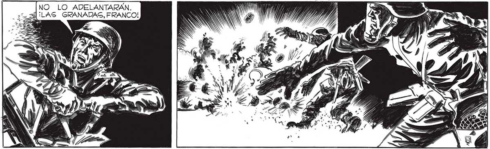
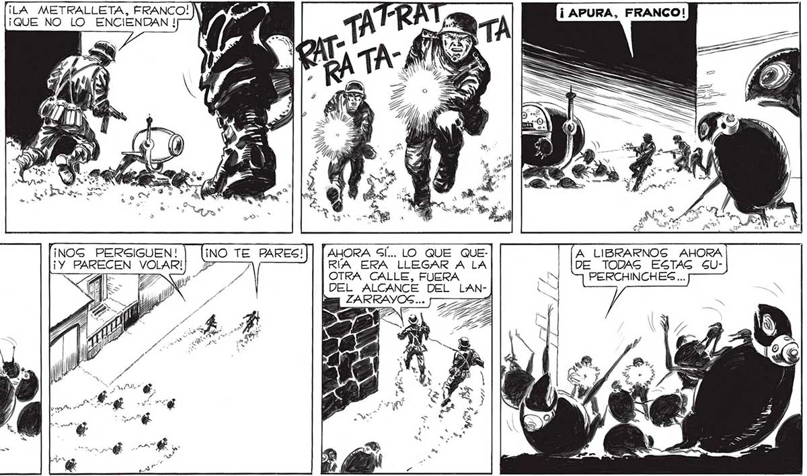

NO LO ADELANTARAN. ¡LAS GRANADAS, FRANCO! ¡VEN, FRANCO! ¡VAMOS A LA OTRA ESQUINA! "¡NOS PERSIGUEN! ¡Y PARECEN VOLAR! G Ga SL AHORA Gl... LO QUE QUERÍA ERA LLEGAR A LA OTRA CALLE, FUERA DEL ALCANCE DEL L ZARRAYOS... ¡IMPOSIBLE ENTRAR EN LA CALLE! ¡ EL LANZARRAYOS GIGUE ENCENDIDO! SS A LIBRARNOS AHORA DE TODAS ESTAG SUPERCHINCHES ... 137

